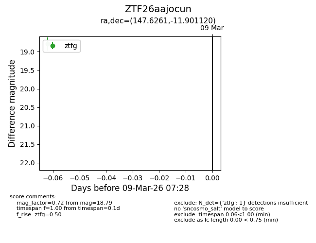
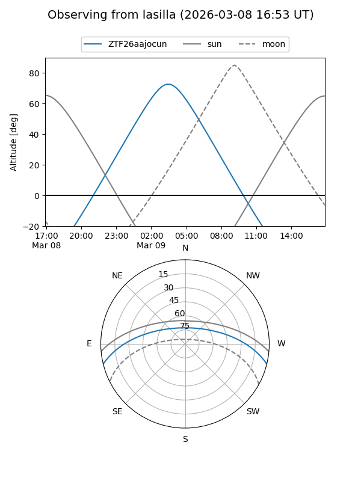
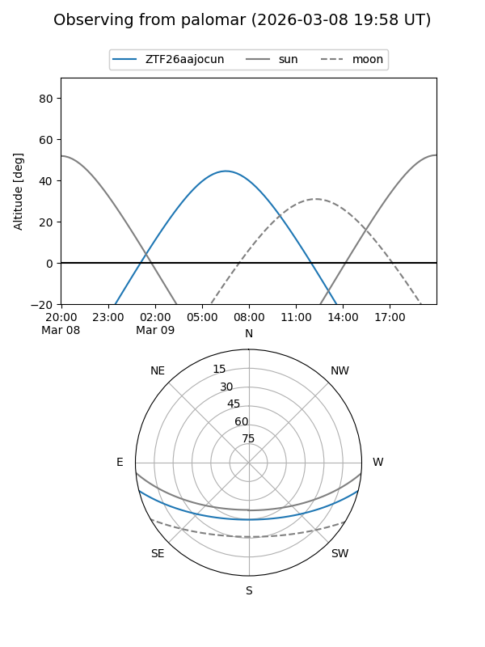

ZTF26aajocun
Target ZTF26aajocun at 2026-03-09 07:29
Aliases and brokers:
FINK: link
Lasair: link
ALeRCE: link
alt names
ZTF26aajocun (ztf,fink_ztf)
Coordinates:
equatorial (ra, dec) = 147.6261,-11.90112
equatorial (HMS+DMS) = 09:50:30.25,-11:54:04.03
galactic (l, b) = (248.5524,+31.28136)
Flags:
Photometry:
last ztfg=18.79
1 ztfg detections
Lightcurve

Visibility


Additional plots